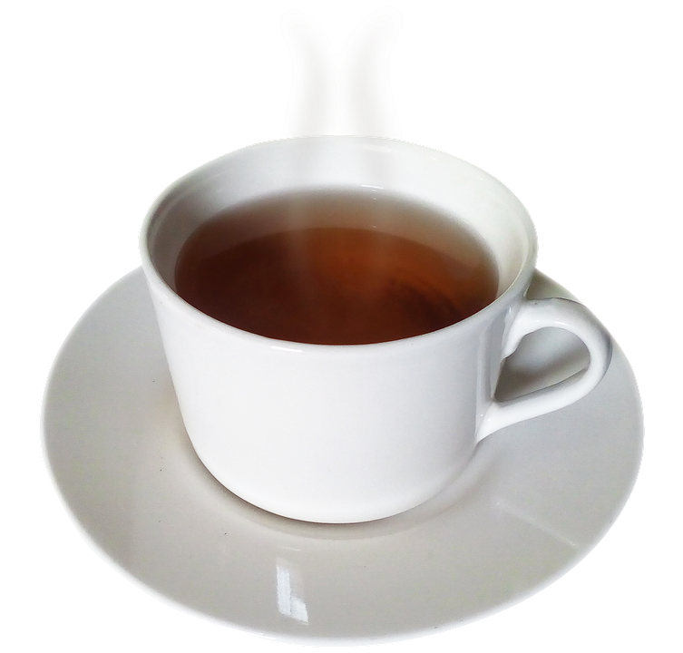
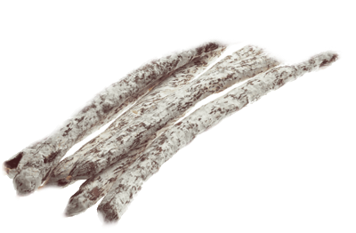

Напитки
Эспрессо 100мл
Эспрессо — плотный кофейный напиток. Для него характерны крайне интенсивные вкусоароматические качества при небольшом количестве жидкости в чашке
Капучино 300мл
Капучино — кофейный напиток на основе эспрессо с добавлением в него подогретого до 65 градусов вспененного молока.
Американо 200мл

Американо — напиток на основе эспрессо с добавлением горячей воды. Обычно используется соотношение 1:2 или 1:3 эспрессо к воде.
Латте 300мл

Латте — кофейный напиток на основе молока, представляющий собой трёхслойную смесь из молочной пены, молока и кофе эспрессо.
Флэтуайт 300мл
Флэт уайт — это вид кофе, приготовленный из двойного эспрессо и горячего молока с небольшим количеством пены.
Чай зелёный с мятой 200мл

Зеленый чай готовится из листьев камелии синенсис, которые не подверглись такому процессу увядания и окисления, который используется для приготовления черного чая.
Чай черный 200мл
Чёрный чай — вид чая, подвергающийся полной ферментации (окислению) в течение от двух недель до месяца (по традиционной технологии).
Чай ягодный 200мл

Ягодный чай – это напиток, заваренный из ягод. В настоящее время можно встретить как смеси черного и зеленого чая с добавлением ягод, так и классические варианты, в которых чайный лист отсутствует.
Выпечка
Круассан без начинки
Круассан — небольшое мучное кондитерское изделие, булочка в форме полумесяца (рогалика) из слоёного теста.
Круассан с ветчиной и сыром
Круассан — небольшое мучное кондитерское изделие, булочка в форме полумесяца (рогалика) из слоёного теста с вкуснейшими ветчиной и сыром.
Круассан с миндальным кремом
Круассан — небольшое мучное кондитерское изделие, булочка в форме полумесяца (рогалика) из слоёного теста с нежным миндальным кремом.
Круассан с шоколадной начинкой
Круассан — небольшое мучное кондитерское изделие, булочка в форме полумесяца (рогалика) из слоёного теста с шоколадной начинкой.
Пиво
VM Золотой Ярлык
Латте — кофейный напиток на основе молока, представляющий собой трёхслойную смесь из молочной пены, молока и кофе эспрессо.
VM Bavorske Moravsky Klass
Капучино — кофейный напиток на основе эспрессо с добавлением в него подогретого до 65 градусов вспененного молока.
VM Небраска
Прекрасный кофейный напиток на основе цельных зёрен
Plan B Murquell
Прекрасный кофейный напиток на основе цельных зёрен
Stamm StraBenbahn
Латте — кофейный напиток на основе молока, представляющий собой трёхслойную смесь из молочной пены, молока и кофе эспрессо.
Plab B Ковбой Мальборо
Капучино — кофейный напиток на основе эспрессо с добавлением в него подогретого до 65 градусов вспененного молока.
VM Бородинское ржаное

Прекрасный кофейный напиток на основе цельных зёрен
VM Моравский Клас Пшеничное
Прекрасный кофейный напиток на основе цельных зёрен
Снеки
Гренки Волнистые в ассортименте
«Волнистые» гренки — это слайсы ржано-пшеничного хлеба, испечённого по традиционным рецептурам, нежно обжаренные в масле.
Картошка жареная Bruto в ассортименте
Продукт отличается плотной хрустящей консистенцией, насыщенным, ярко выраженным вкусом, приятным ароматом и длительным послевкусием.
Колбаски Mini Fuet сыровяленые в ассортименте
Встречаются разнообразные вкусы: медвежатина, зайчатина и лосятина, каждый из которых подчеркивает уникальность и изысканность настоящего мясного деликатеса.
Мясо вяленое Рыцарское в ассортименте
Приготовлены по оригинальному старинному рецепту. Именно такое сушеное мясо шведские рыцари брали с собой в походы.